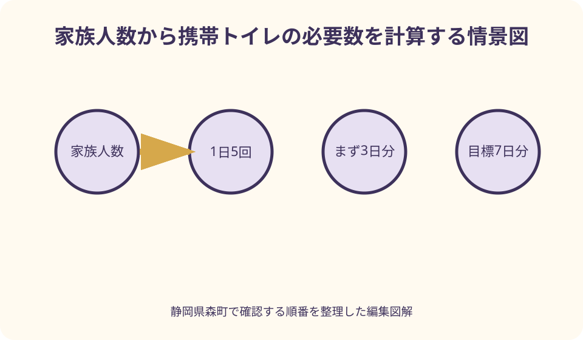
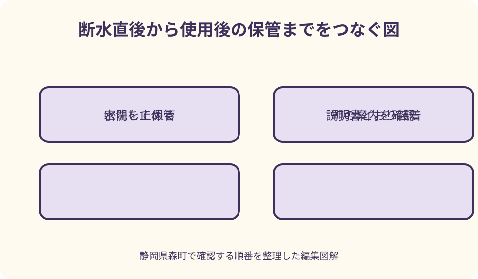

防災・家族の備え｜最終確認 2026-08-10
静岡県森町の災害用トイレ備蓄｜必要数・使い方・使用後の保管
災害用トイレは、買って棚へ置くだけでは十分ではありません。家族人数から回数を計算し、便器が安全かを確かめ、袋の取り付けから使用後の一時保管まで一度練習して初めて、断水時に使える備えになります。

編集イラスト結論：家族人数×1日5回×7日で数え、使い終わる所まで試す
地震や大雨の後、蛇口から水が出ても水洗トイレをすぐ流せるとは限りません。下水管、浄化槽、宅内排水管のどこかが傷んでいれば、流した汚水が逆流したり、見えない場所へ漏れたりするおそれがあります。水の有無だけで使用再開を決めず、町や管理者の案内と建物の状態を確かめることが出発点です。
経済産業省が内閣府の広報ページで示す備蓄目安は、1人1日5回を7日間、つまり1人当たり35回分です。4人世帯なら5回×4人×7日で140回分になります。乳幼児、高齢者、服薬や体調によって回数が多い家族がいれば、その分を上乗せして考えます。
最低限から始める場合も、家族人数×5回×3日を最初の到達点にすると不足が見えます。4人世帯なら60回分です。まず3日分を確保し、その後の買物で1週間分へ伸ばすなら、予算や収納の事情があっても着手できます。
この記事でいう携帯トイレは、既存の洋式便器などへ便袋を取り付け、排せつ物を凝固剤等で処理して保管・回収する製品を中心に指します。製品ごとに袋の枚数、凝固剤を入れる時点、対応する便器、使用期限が違うため、実際には購入品の説明書を優先してください。
森町と国・県の一次情報から確認できること
森町の子育て応援サイトにある「災害に備えて」は、家庭の状況に合わせた非常時の持ち出し品として携帯トイレ、トイレットペーパー、色付きのごみ袋、除菌ウェットティッシュなどを挙げています。携帯トイレ単体ではなく、衛生用品と袋を一組で考える必要があると読めます。
同じ森町公式ページは、町指定避難所と森町防災ハザードマップを平常時に確認するよう案内し、危機管理課危機管理係の連絡先を掲載しています。在宅避難用の備蓄を整えても、自宅が安全でなければ留まる理由にはなりません。トイレ備蓄と避難判断は分けずに確認します。
森町公式の「防災」一覧には、防災情報、町指定避難所、森町防災ガイドブック、ハザードマップ、非常時の持ち出し、町の防災倉庫備蓄資機材などへの入口があります。災害が起きたら、古い保存画像だけに頼らず、この公式入口から最新情報をたどります。
静岡県公式の「備蓄について」は、断水だけでなく下水道の破損時にも、流した排せつ物を処理できなくなる場合があると説明しています。また、トイレを使いにくいことが体調悪化や災害関連死につながるおそれを示し、家族や地域で利用場面を試すよう呼びかけています。
内閣府の「避難所におけるトイレの確保・管理ガイドライン」は自治体や避難所向けの資料ですが、家庭の備えにも役立ちます。断水、停電、下水道・浄化槽の破損、浸水がそれぞれ別の理由で水洗トイレを止めると整理し、携帯トイレは発災直後や在宅避難で使いやすい備蓄と位置付けています。
必要数は回数で管理し、袋と凝固剤の組を数える
備蓄箱に「50回分」と書かれていても、便袋50枚と凝固剤50包がそろっているかを開封前に表示で確認します。外袋や処理袋が別売りの製品もあります。家族人数分を複数商品でそろえるときは、使い方が混ざらないよう製品ごとに説明書を残します。
1週間分の算式は、人数だけでなく自宅に滞在する人を基準にします。在宅勤務者、夜勤者、帰省中の家族、来客がいる日では必要数が変わります。平日昼間と夜間の二通りを計算し、多い方を基準にすると、家族がそろった状況にも対応できます。
子どもの紙おむつは携帯トイレの回数に含めず、別に必要枚数を数えます。おむつが外れかけの子には、補助便座や普段使う踏み台が必要な場合があります。災害時だけ見慣れない便袋へ替えると我慢につながるため、家族の発達段階に合わせます。
回数表には購入数だけでなく、使用期限、袋の寸法、保管場所、練習で使った数も記録します。140回分を買った後に2回練習したなら、残りは138回分です。点検日ごとに実数を更新すれば、箱があるのに中身が足りない状態を避けられます。

地震や断水の直後に水洗を止める判断
大きな揺れの直後は、便器のひび、床の水漏れ、排水管の外れ、浄化槽や下水道の異常が分からない段階です。見た目に異常がなくても、町や施設管理者から使用可否が示されるまでは無理に流さず、携帯トイレへ切り替える方が安全です。
停電だけでも、ポンプで給水する建物や浄化槽の送風機が止まると、水洗機能に影響する場合があります。自宅が下水道接続か浄化槽か、停電時にどの設備が止まるかを平常時に家族と確認し、設備業者の連絡先も残します。
大雨や洪水では、排水先の機能停止や浄化槽への逆流が起こるおそれがあります。森町防災ハザードマップで自宅周辺の洪水・土砂災害情報を確かめ、避難情報が出たときはトイレの準備を理由に移動を遅らせません。
便器そのものが倒れている、割れている、周囲にガラス片がある場合は、便器へ袋を掛ける方法も使えません。折り畳み式の簡易便座など別の受け台を用意するか、安全な避難先へ移る判断が必要です。携帯トイレと簡易トイレの違いを購入前に確認します。
平常時に一回試す：便器を汚さない取り付け順
練習は、製品の説明書を読み、排せつせずに袋を便器へ取り付けるところから始めます。一般には、便器内の水との接触を避けるための保護袋を先に掛け、その上へ交換する便袋を重ねますが、製品指定があれば必ずそちらに従います。
凝固剤は使用前に入れる製品と使用後に振りかける製品があります。先入れと思い込むと固まり方が変わる可能性があるため、家族が使う箱の表へ順番を大きく書きます。暗い室内でも読める文字にし、懐中電灯を近くへ置きます。
排せつ後は、袋の外側へ触れる範囲を減らし、説明書どおりに空気を抜いて口を確実に結びます。強く押して空気を抜こうとすると内容物が漏れるおそれがあります。結びにくい家族がいる場合は、口を閉じやすい製品や補助具を平常時に選びます。
練習用の一回分は、災害用の残数から差し引きます。水や着色した紙などを使う場合も、製品が練習利用を認めているか確認し、処分は製品表示と平常時の町の分別に従います。実際の排せつ物を使った試用は、衛生面と排出方法を十分に確認してからにします。
手洗い・照明・換気をトイレ本体と同時に備える
携帯トイレがあっても、手洗い用水や手指衛生用品がなければ感染症の危険を下げにくくなります。食品用とは別に、手洗いへ回せる生活用水、石けん、手指衛生用品、使い捨て手袋、清掃用具をトイレの近くへまとめます。
手袋は着ければ終わりではありません。外すときに汚れた面へ触れない手順を家族で確かめ、使用後は便袋とは分けて扱います。乳幼児の世話や食事作りをする人ほど、トイレ作業の前後で担当を分けられるようにします。
夜間の停電を想定し、両手を使えるヘッドライトや置き型照明を用意します。ろうそくは余震で倒れて火災につながるため、トイレ照明の第一候補にしません。交換電池や充電状態も、携帯トイレの点検日と一緒に確認します。
臭気対策では換気が必要ですが、外気を入れることが危険な状況や、窓を開けると雨が吹き込む状況もあります。換気扇が停電で止まる場合を想定し、消臭袋やふた付き容器を補助にしつつ、安全を確かめて短時間換気します。
使用後の便袋は、町の災害時案内が出るまで密閉保管する
使用済み便袋を平常時と同じ収集日に出せるとは限りません。道路、焼却施設、収集体制の被害によって回収方法が変わるため、発災後は森町の公式発表を確認します。案内が出る前に集積所へ積み上げると、散乱や衛生悪化を招きます。
便袋は製品の手順で密閉したうえで、さらに丈夫な袋やふた付き容器へ入れます。食品、水、子どもの用品から離し、直射日光や雨を避け、動物が触れない場所へ置きます。浸水のおそれがある床面や、避難経路をふさぐ場所は避けます。
内閣府のガイドラインも、使用済み携帯トイレの保管場所と回収手段を事前に確保する必要を示しています。家庭でも「使い方」だけでなく「最大1週間分をどこへ置くか」を決めます。4人140回分なら、使用後の容積が保管箱へ収まるかも試算します。
凝固剤を入れた便袋へ水、薬品、漂白剤などを自己判断で追加しません。反応や袋の劣化を招く可能性があるためです。消臭や処理方法は製品表示に従い、不明点は製造元へ確認します。異なる薬剤を混ぜることは避けます。

乳幼児・高齢者・障害のある家族には別の使いやすさが要る
幼児には便座の高さや穴の大きさが不安になることがあります。普段の補助便座が便袋を傷つけないか、袋を掛けた状態でも安定するかを確認します。おむつ、おしりふき、着替え、汚れ物用袋も同じ場所へそろえます。
高齢者や足腰に不安のある人は、低い簡易便座から立ち上がれない場合があります。普段使う洋式便器が無事なら便袋式を優先し、手すりや介助者の立つ場所を確保します。便器周辺へ物を積み、つまずく動線を作らないことも重要です。
視覚に障害のある人には、袋や凝固剤の置き場所を固定し、形の違いで分かるようにします。聴覚に障害のある人へは、町からの使用・回収案内を文字で伝えられる手段を確認します。家族だけで決めず、本人が使いやすい順番を一緒に試します。
人工肛門・人工膀胱を使う人は、装具、処理袋、皮膚を清潔に保つ用品、交換できる明るさと空間が別に必要です。通常の携帯トイレ数だけで備えが足りるとは考えず、平常時に医療職や装具の供給元へ災害時の持出量と保管条件を相談します。
森町の地形と住まい方に合わせて置き場所を分ける
森町では、町なかと山間部で店舗や避難所までの距離、道路が使えない場合の影響が同じとは限りません。救援物資がすぐ届く前提を置かず、自宅、車、家族の職場など滞在時間の長い場所ごとに少量ずつ分散します。ただし車内の高温で劣化しないかは製品表示で確認します。
自宅の備蓄は、地震で棚が倒れて取り出せない状況を避けるため、一箱へ集中させません。トイレ近くの主在庫に加え、寝室側や二階など安全に取り出せる場所へ予備を置きます。重い保管容器は高い棚へ載せず、扉や避難通路をふさがない位置にします。
浸水想定区域では、使用前の製品を床へ直置きせず、落下しにくい高さへ置きます。一方、土砂災害のおそれがある側の部屋へ全量を集めるのも避けます。ハザードマップを見ながら、災害の種類ごとに取り出せる場所を選びます。
在宅避難と避難所移動では持てる量が違います。140回分を背負って移動するのではなく、避難用バッグには当面の回数分を入れ、残りは自宅用とします。安全確保が最優先であり、備蓄を取りに戻る行動はしません。
良い点：水や食料と同じように数で見える備えになる
災害用トイレを回数で管理する良い点は、「十分だと思う」という感覚を具体的な不足数へ変えられることです。家族4人で現在80回分なら、3日分60回は超えていても、1週間分140回までは60回不足していると分かります。
既存便器へ便袋を掛ける携帯トイレは、便器が無事なら普段に近い姿勢で使え、組み立て式の大型設備より保管場所を抑えやすい特徴があります。発災直後に家庭で切り替えやすい点は、在宅避難の大きな助けになります。
一度練習すると、袋が便座に挟まる、凝固剤の文字が暗所で読めない、子どもが怖がる、使用後の箱が小さいといった家庭固有の問題が見つかります。災害当日ではなく、買い足しや配置変更ができる平常時に直せます。
水洗を無理に使わない準備は、排水管や浄化槽の状態が確認できるまで待つ余裕にもつながります。携帯トイレの在庫があれば、「一度くらい流してみる」という危険な試行を避け、町や管理者の案内を落ち着いて待てます。
注文したい点：個数の目安だけでは衛生と回収まで完結しない
国や県が示す1人週35回分は分かりやすい一方、家庭ごとの排せつ回数、介助、住まいの排水方式までは決めてくれません。数字をそのまま全世帯の正解にせず、普段の回数と家族の健康状態を加えて調整する必要があります。
市販品には、便袋の厚さ、凝固速度、対応量、消臭性、使用期限、外袋の有無など違いがあります。「防災用」という表示だけで選ばず、家族が結べるか、便器へ収まるか、保管容器に入るかを現物で確かめたいところです。
森町公式の持ち出し品一覧には携帯トイレが明記されていますが、災害の規模ごとの家庭用必要数や、発災後の具体的な回収日は平常時に固定できません。だからこそ必要数は国の目安で備え、排出時は町の最新発表で確認する二段構えにします。
在庫を増やしても、自宅が危険な場所にあれば在宅を続けられません。トイレがあることと家に残れることは別の判断です。森町防災ハザードマップ、避難情報、建物被害、家族の健康状態を合わせ、避難が必要なら早めに移動します。
代案・結論：一度に1週間分が難しければ3日分から増やす
予算や収納の都合で1週間分を一度にそろえられない家庭は、まず3日分を家族人数で計算します。次の買物で10回分、20回分と追加し、購入日と残数を記録します。何も用意しない状態を長く続けるより、最小単位から始める方が現実的です。
洋式便器を使えない可能性が高い住まいでは、携帯便袋だけでなく、安定した簡易便座も候補にします。購入前に耐荷重、座面高、設置面積、介助スペースを確認し、屋外設置だけを前提にしません。大雨や夜間でも安全に使える場所が必要です。
使用済み便袋の置き場がない場合は、買い足す前に保管容器と位置を決めます。ふた付き容器を食品から離し、雨、直射日光、浸水、動物、子どもの接触を避けられないなら、分散方法や避難先での利用を家族で検討します。
結論として、今日行う作業は、家族人数×5回×7日を計算し、手元の回数を数え、1回分だけ説明書どおりに取り付け練習をすることです。足りない数と使いにくい点が分かれば、次の買物と家族共有へ具体的につなげられます。
家族に残す記録：残数・置き場所・再確認日を一枚にする
記録表の一行目には、家族人数、1日の想定回数、目標日数、計算した必要数を書きます。二行目に現在の残数、練習使用数、不足数を置けば、誰が見ても次に買う量が分かります。計算日も必ず添えます。
製品ごとに商品名、使用期限、便袋と凝固剤の数、使用順、問い合わせ先を記録します。説明書は箱から離さず、防水袋にも控えを入れます。似た小袋が混ざる場合は、製品単位で色分けし、別製品の凝固剤を組み合わせません。
置き場所は「納戸」だけでなく、棚の段や容器の色まで書きます。使用済み便袋の一時保管場所、清掃用品、照明、手袋の場所も同じ図へ入れます。家族の一人だけが知る状態では、不在時に備蓄を使えません。
半年ごとを目安に、家族構成、介助の必要、便器、排水方式、製品期限、町の公式ページを見直します。引っ越し、リフォーム、浄化槽設備の変更、乳幼児の成長があった場合は、定期日を待たずに更新します。
大石の視点：トイレ備蓄は住まいの弱点を知る点検になる
大石の視点では、携帯トイレを選ぶ作業は防災用品の買物だけではありません。自宅が下水道か浄化槽か、停電で何が止まるか、便器が壊れたときに安全な場所があるかを家族で確認する、住まいの小さな点検です。
森町の家や実家を管理する家族には、所有者が遠方にいる例もあります。帰省時に備蓄の期限、漏水、浄化槽の管理先、ブレーカー、避難経路を一枚へ残しておけば、災害時に現地の家族だけへ判断を集中させずに済みます。
不動産の売却をまだ決めていなくても、道路、境界、地目、農地、登記名義と一緒に、上下水道や浄化槽の情報を実家カルテへ記録する価値があります。排水方式は普段の維持管理にも、災害時のトイレ判断にも関わるからです。
私は、備蓄の量より先に、家族が使えるか、使用後を置けるか、危険なら避難できるかの三点を確かめたいと考えます。査定額や処分の話を急がず、住み続ける、貸す、売る、しばらく管理する、どの選択にも使える住まいの記録を残してください。
まとめ：回数・使用・保管・情報確認を一つの備えにする
静岡県森町で災害用トイレを備える目安は、1人1日5回、最低3日分、できれば7日分です。1人週35回分、4人週140回分を基準に、乳幼児、介助、健康状態、在宅人数に応じて上乗せします。
水が止まったときだけでなく、下水道、浄化槽、宅内排水管が傷んだ可能性があるときも水洗を止めます。水が残っているから流せるとは判断せず、森町や施設管理者の最新情報、建物の状態を確認します。
購入後は一回分を使って、袋の取り付け、凝固剤を入れる時点、口の閉じ方、手指衛生、使用後の保管場所まで試します。説明書、照明、手袋、清掃用品、ふた付き容器を同じ備えとして扱います。
発災後の排出方法は被害状況で変わります。使用済み便袋は密閉して安全に保管し、森町の公式案内を待ちます。今日、必要数と手元の残数を一枚へ書き、家族全員で保管場所を確認するところから始めてください。
公式情報・確認先
掲載内容は次の一次情報を基礎に整理しました。営業、料金、催し、交通は変わるため、出発前または手続き前にリンク先で最新情報を確認してください。
- 災害に備えて（静岡県森町、2026-08-10確認）
- 防災（静岡県森町、2026-08-10確認）
- 備蓄について（静岡県、2026-08-10確認）
- 避難所におけるトイレの確保・管理ガイドライン（令和6年12月改定）（内閣府、2026-08-10確認）
- トイレ備蓄忘れていませんか？（内閣府・経済産業省、2026-08-10確認）